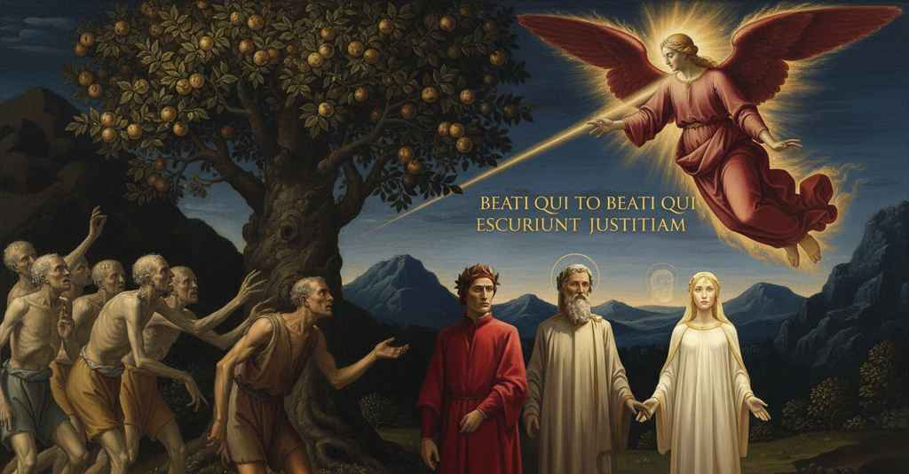

Purgatorio — Canto 24

Proseguendo il colloquio con Forese, che profetizza la terribile fine del fratello Corso, Dante definisce a Bonagiunta da Lucca il 'dolce stil novo', per poi superare il secondo albero e farsi cancellare dall'angelo la sesta 'P'. Continuing his conversation with Forese, who prophesies the terrible end of his brother Corso, Dante defines the 'sweet new style' to Bonagiunta of Lucca before passing the second tree and having the angel erase the sixth 'P'. 兄コルソの悲惨な末路を予言するフォレーゼとの対話を続けながら、ダンテはボナジュンタ・ダ・ルッカに「甘美な新体」を定義し、その後二本目の木を通り過ぎて天使に六番目の「P」を消してもらう。
1
Né ’l dir l’andar, né l’andar lui più lento
Neither the speaking made the walking, nor the walking made it slower,
話が歩みを、また歩みが話を、より遅くすることはなく、
2
facea, ma ragionando andavam forte,
but talking we went on strongly,
語り合いながら我らは力強く進んだ、
3
sì come nave pinta da buon vento;
just like a ship pushed by a good wind;
順風に押される船のように。
4
e l’ombre, che parean cose rimorte,
and the shades, that seemed twice-dead things,
そして亡霊たちは、再び死んだものに見えたが、
5
per le fosse de li occhi ammirazione
through the pits of their eyes drew wonder
その窪んだ眼窩から驚きの念を
6
traean di me, di mio vivere accorte.
from me, having become aware of my being alive.
私に向けていた、私が生きていることに気づいて。
7
E io, continüando al mio sermone,
And I, continuing my speech,
そして私は、話を続け、
8
dissi: «Ella sen va sù forse più tarda
said: «She perhaps goes up more slowly
言った、「彼は天に昇るのが、おそらく遅れているのだろう
9
che non farebbe, per altrui cagione.
than she would, for another's sake.
他者のために、本来よりも。
10
Ma dimmi, se tu sai, dov’ è Piccarda;
But tell me, if you know, where Piccarda is;
だが教えてくれ、もし知っているなら、ピッカルダはどこにいるか。
11
dimmi s’io veggio da notar persona
tell me if I see any person of note
教えてくれ、私が注目すべき人物を見ているかどうか
12
tra questa gente che sì mi riguarda».
among these people that so stare at me».
このように私を見つめるこの人々の中に」。
13
«La mia sorella, che tra bella e buona
«My sister, who between beautiful and good
「私の妹は、美しさと善良さのどちらが
14
non so qual fosse più, trïunfa lieta
I know not which she was more, triumphs happily
より優れていたか分からぬが、喜びに満ちて凱旋している
15
ne l’alto Olimpo già di sua corona».
in high Olympus already with her crown».
高きオリュンポスで、すでにその冠を戴いて」。
16
Sì disse prima; e poi: «Qui non si vieta
So he said first; and then: «Here it is not forbidden
彼はまずそう言い、そして続けた、「ここでは禁じられてはいない
17
di nominar ciascun, da ch’è sì munta
to name each one, since our appearance
一人一人を名指すことは、なぜなら我らの姿はすっかり搾り取られているのだ
18
nostra sembianza via per la dïeta.
is so drained away by the diet.
食事制限によって。
19
Questi», e mostrò col dito, «è Bonagiunta,
This one», and he pointed with his finger, «is Bonagiunta,
この者」、と指で示して、「はボナジュンタ、
20
Bonagiunta da Lucca; e quella faccia
Bonagiunta of Lucca; and that face
ルッカのボナジュンタだ。そしてあの顔は
21
di là da lui più che l’altre trapunta
beyond him more than the others wasted away
彼の向こうで、他の者よりひときわやつれた顔は、
22
ebbe la Santa Chiesa in le sue braccia:
had the Holy Church in his arms:
聖なる教会がその腕に抱いた者だ。
23
dal Torso fu, e purga per digiuno
from Tours he was, and purges by fasting
トゥールの出身で、断食によって浄めている
24
l’anguille di Bolsena e la vernaccia».
the eels of Bolsena and the Vernaccia wine».
ボルセーナの鰻とヴェルナッチャ葡萄酒を」。
25
Molti altri mi nomò ad uno ad uno;
Many others he named to me one by one;
彼は他の多くの者も一人一人私に名指した。
26
e del nomar parean tutti contenti,
and at the naming all seemed content,
そして名指されることを皆喜んでいるように見え、
27
sì ch’io però non vidi un atto bruno.
so that I for that saw not one dark look.
だから私は誰一人として暗い表情を見なかった。
28
Vidi per fame a vòto usar li denti
I saw using their teeth on emptiness for hunger
私は飢えのあまり空しく歯を使うのを見た
29
Ubaldin da la Pila e Bonifazio
Ubaldin da la Pila and Bonifazio
ウバルディン・ダ・ラ・ピーラとボニファーツィオを。
30
che pasturò col rocco molte genti.
who with his crozier pastured many people.
彼は司教杖で多くの民を牧した。
31
Vidi messer Marchese, ch’ebbe spazio
I saw Messer Marchese, who had occasion
私はマルケーゼ殿を見た、彼はかつて
32
già di bere a Forlì con men secchezza,
once to drink at Forlì with less dryness,
フォルリで今ほどの渇きもなく飲む機会があったが、
33
e sì fu tal, che non si sentì sazio.
and yet was such that he never felt sated.
それでも満足することを知らぬほどであった。
34
Ma come fa chi guarda e poi s’apprezza
But as one who looks and then esteems
だが、見つめて、そして評価するように
35
più d’un che d’altro, fei a quel da Lucca,
one more than another, I did to that one from Lucca,
他人よりもある一人を、私はそのルッカ出身の者にした、
36
che più parea di me aver contezza.
who seemed to have more awareness of me.
彼は私についてより多くを知っているように見えたからだ。
37
El mormorava; e non so che «Gentucca»
He was murmuring; and I know not what 'Gentucca'
彼は呟いていた。そして何をか「ジェンツッカ」と
38
sentiv’ io là, ov’ el sentia la piaga
I heard there, where he felt the wound
私はそこで聞いた、彼が傷を感じている場所で
39
de la giustizia che sì li pilucca.
of the justice that so plucks at them.
彼らをかくも啄む正義の。
40
«O anima», diss’ io, «che par sì vaga
'O soul,' I said, 'who seems so eager
「おお、魂よ」私は言った、「私と話すことを
41
di parlar meco, fa sì ch’io t’intenda,
to speak with me, make it so that I understand you,
かくも望んでいるように見える方よ、私があなたを理解できるようにしてください、
42
e te e me col tuo parlare appaga».
and with your speech satisfy both you and me.'
そしてあなたの言葉で、あなたと私を満たしてください」。
43
«Femmina è nata, e non porta ancor benda»,
'A woman is born, and does not yet wear a veil,'
「女が生まれている、そしてまだヴェールを被っていない」
44
cominciò el, «che ti farà piacere
he began, 'who will make my city
彼は始めた、「その女があなたに好ませるだろう
45
la mia città, come ch’om la riprenda.
pleasing to you, however one may reprehend it.
わが都を、人がいかにそれを非難しようとも。
46
Tu te n’andrai con questo antivedere:
You will go on with this foreseeing:
あなたはこの予見を携えて行くがいい。
47
se nel mio mormorar prendesti errore,
if you made an error in my murmuring,
もし私の呟きをあなたが誤解したのなら、
48
dichiareranti ancor le cose vere.
the true events will yet make it clear to you.
真実の出来事がいずれあなたに明らかにするだろう。
49
Ma dì s’i’ veggio qui colui che fore
But tell me if I see here the one who brought forth
だが教えてくれ、私がここに、かの者を見ているのか
50
trasse le nove rime, cominciando
the new rhymes, beginning:
新しい詩を世に出した、こう始める
51
‘Donne ch’avete intelletto d’amore’».
'Ladies who have understanding of love.''
『愛の知性を持つ貴婦人たちよ』と」。
52
E io a lui: «I’ mi son un che, quando
And I to him: 'I am one who, when
そして私は彼に、「私は、ある者です、
53
Amor mi spira, noto, e a quel modo
Love inspires me, takes note, and in that manner
愛が私に霊感を与える時、それを書き留め、そしてその流儀で
54
ch’e’ ditta dentro vo significando».
that he dictates within, I go setting forth.'
彼が内で口述するままに、私は表現していくのです」。
55
«O frate, issa vegg’ io», diss’ elli, «il nodo
'O brother, now I see,' he said, 'the knot
「おお、兄弟よ、今こそ私には見える」彼は言った、「その結び目が
56
che ’l Notaro e Guittone e me ritenne
that held the Notary and Guittone and me
かの公証人とグイットーネと私を留めていた
57
di qua dal dolce stil novo ch’i’ odo!
short of the sweet new style that I hear!
私が聞くその甘美な新体のこちら側に！
58
Io veggio ben come le vostre penne
I see well how your pens
私にはよく見える、いかにあなたのペンが
59
di retro al dittator sen vanno strette,
follow closely behind the dictator,
口述者の後ろに、ぴったりとついて行くかが、
60
che de le nostre certo non avvenne;
which certainly did not happen with ours;
我々のペンには、確かにそれは起こらなかった。
61
e qual più a gradire oltre si mette,
and he who sets himself to look further,
そして、さらに深く探ろうとする者は、
62
non vede più da l’uno a l’altro stilo»;
sees no more difference from the one style to the other';
一方の様式と他方の様式との間に、それ以上の違いは見ない」。
63
e, quasi contentato, si tacette.
and, as if content, he fell silent.
そして、あたかも満足したかのように、彼は黙り込んだ。
64
Come li augei che vernan lungo ’l Nilo,
Just as the birds that winter along the Nile,
ナイル川のほとりで冬を越す鳥たちが、
65
alcuna volta in aere fanno schiera,
sometimes in the air form a flock,
あるときは空中で一団となり、
66
poi volan più a fretta e vanno in filo,
then fly more swiftly and go in a line,
やがて急ぎ飛び、一列になるように、
67
così tutta la gente che lì era,
so all the crowd that was there,
そこにいた全ての民は、
68
volgendo ’l viso, raffrettò suo passo,
turning their faces, quickened their pace,
顔を向けて、その歩みを速め、
69
e per magrezza e per voler leggera.
and light through thinness and through will.
痩せているため、そして意志の軽やかさゆえに。
70
E come l’uom che di trottare è lasso,
And as the man who is tired of trotting
そして、速足に疲れた人が、
71
lascia andar li compagni, e sì passeggia
lets his companions go on, and so he walks
仲間を先に行かせ、歩きながら
72
fin che si sfoghi l’affollar del casso,
until the panting in his chest is vented,
胸の息切れを鎮めるように、
73
sì lasciò trapassar la santa greggia
so Forese let the holy flock pass by
そのように聖なる群れを通り過ぎさせた
74
Forese, e dietro meco sen veniva,
and came along behind with me,
フォレーゼは、私の後ろについてきて、
75
dicendo: «Quando fia ch’io ti riveggia?».
saying: 'When will it be that I see you again?'.
言った、「いつ再び君に会えるだろうか？」。
76
«Non so», rispuos’ io lui, «quant’ io mi viva;
'I do not know,' I answered him, 'how long I may live;
「どれほど生きるか、分かりません」と私は彼に答えた、
77
ma già non fïa il tornar mio tantosto,
but my return will not be so soon
「しかし、私の帰還はそれほど早くはないでしょう、
78
ch’io non sia col voler prima a la riva;
that I am not with my will first at the shore;
意志において先にこの岸辺に着かぬほどには。
79
però che ’l loco u’ fui a viver posto,
because the place where I was put to live
なぜなら、私が生きるために置かれた場所は、
80
di giorno in giorno più di ben si spolpa,
from day to day is stripped more of its good,
日毎に善が剥ぎ取られ、
81
e a trista ruina par disposto».
and seems destined for a sad ruin.'
悲しい破滅へと向かっているようです」。
82
«Or va», diss’ el; «che quei che più n’ha colpa,
'Now go,' he said; 'for he who has most blame for it,
「さあ行け」と彼は言った、「それに最も罪ある者を、
83
vegg’ ïo a coda d’una bestia tratto
I see dragged at the tail of a beast
私は獣の尾に引かれて
84
inver’ la valle ove mai non si scolpa.
toward the valley where sin is never absolved.
決して罪が赦されぬ谷へ行くのを見る。
85
La bestia ad ogne passo va più ratto,
The beast at every step goes faster,
獣は一歩ごとに速度を増し、
86
crescendo sempre, fin ch’ella il percuote,
always increasing, until it strikes him,
絶えず速まり、ついに彼を打ちのめし、
87
e lascia il corpo vilmente disfatto.
and leaves the body vilely mangled.
卑しくも引き裂かれた体を残す。
88
Non hanno molto a volger quelle ruote»,
Those wheels have not long to turn,'
あの天の輪が回るのも長くはないだろう」、
89
e drizzò li occhi al ciel, «che ti fia chiaro
and he raised his eyes to heaven, 'before what
と天に目を向け、「お前には明らかになるだろう
90
ciò che ’l mio dir più dichiarar non puote.
my speech cannot declare more will be clear to you.
私の言葉がこれ以上明らかにできぬことが。
91
Tu ti rimani omai; ché ’l tempo è caro
You remain here now; for time is precious
お前はもう留まれ。この王国では時は貴重なのだから、
92
in questo regno, sì ch’io perdo troppo
in this kingdom, so that I lose too much
私はあまりに多くを失ってしまう
93
venendo teco sì a paro a paro».
by coming with you thus, side by side.'
このように君と並んで歩いては」。
94
Qual esce alcuna volta di gualoppo
As sometimes at a gallop there breaks out
あるとき騎兵の一団から駆け出し、
95
lo cavalier di schiera che cavalchi,
the knight from a riding troop,
先陣の誉れを得ようと
96
e va per farsi onor del primo intoppo,
and goes to win honor in the first clash,
進む騎士のように、
97
tal si partì da noi con maggior valchi;
so he departed from us with greater strides;
そのように彼はより大股で我々から去った。
98
e io rimasi in via con esso i due
and I remained on the path with those two
そして私は道に残された、かの二人と共に、
99
che fuor del mondo sì gran marescalchi.
who were such great marshals in the world.
世にとってかくも偉大な導き手であった者たちと。
100
E quando innanzi a noi intrato fue,
And when he had gone on ahead of us,
そして彼が我々の先へ入ると、
101
che li occhi miei si fero a lui seguaci,
so that my eyes made themselves followers of him,
私の目は彼の後を追う者となり、
102
come la mente a le parole sue,
as my mind did of his words,
心が彼の言葉に従うように、
103
parvermi i rami gravidi e vivaci
the branches of another apple tree appeared to me,
私には枝が実り豊かで生き生きと見えた
104
d’un altro pomo, e non molto lontani
heavy and lively, and not very far away,
別の果実の、そしてそう遠くない、
105
per esser pur allora vòlto in laci.
for we had only then turned into a bend.
まさにその時、そちらへ向かったために。
106
Vidi gente sott’ esso alzar le mani
I saw people beneath it raising their hands
その下にいる人々が手を上げるのを見た
107
e gridar non so che verso le fronde,
and crying out I know not what toward the leaves,
そして葉叢に向かって何かを叫んでいた、
108
quasi bramosi fantolini e vani
like yearning and futile little children
まるで欲深き虚しい幼子のように
109
che pregano, e ’l pregato non risponde,
who beg, and the one begged does not answer,
祈るが、祈られる者は応えず、
110
ma, per fare esser ben la voglia acuta,
but, to make their desire truly sharp,
しかし、その欲を鋭くさせるために、
111
tien alto lor disio e nol nasconde.
holds high their desire and does not hide it.
彼らの望む物を高く掲げて隠さない。
112
Poi si partì sì come ricreduta;
Then they departed as if undeceived;
やがて彼らは諦めたように去っていった。
113
e noi venimmo al grande arbore adesso,
and we now came to the great tree
そして我々は今、その大樹へと来た、
114
che tanti prieghi e lagrime rifiuta.
that refuses so many prayers and tears.
それは多くの祈りと涙を拒む。
115
«Trapassate oltre sanza farvi presso:
«Pass beyond without coming near:
「近づくことなく、通り過ぎよ。
116
legno è più sù che fu morso da Eva,
higher up is a wood that was bitten by Eve,
上にはエヴァに噛まれた木があり、
117
e questa pianta si levò da esso».
and this plant was raised from it».
この木はそれから生じたのだ」。
118
Sì tra le frasche non so chi diceva;
Thus from among the leaves I know not who was speaking;
そう葉叢の中から誰かが言っていた。
119
per che Virgilio e Stazio e io, ristretti,
wherefore Virgil and Statius and I, drawn close together,
それゆえウェルギリウスとスタティウスと私は、身を寄せ合い、
120
oltre andavam dal lato che si leva.
went onward from the side that rises.
登っていく側を進んでいった。
121
«Ricordivi», dicea, «d’i maladetti
«Remember», it was saying, «the accursed ones
「思い出せ」とその声は言った、「呪われし者らを、
122
nei nuvoli formati, che, satolli,
formed in the clouds, who, sated,
雲の中に形作られ、飽食して、
123
Tesëo combatter co’ doppi petti;
fought Theseus with their double chests;
二つの胸でテセウスと戦った者らを。
124
e de li Ebrei ch’al ber si mostrar molli,
and of the Hebrews who in drinking showed themselves soft,
そして飲むに際して軟弱さを示したヘブライ人らを、
125
per che no i volle Gedeon compagni,
for which Gideon did not want them as companions,
それゆえギデオンは仲間として望まず、
126
quando inver’ Madïan discese i colli».
when toward Midian he descended the hills».
ミディアンに向かって丘を下った時に」。
127
Sì accostati a l’un d’i due vivagni
Thus, keeping close to one of the two edges,
そうして二つの縁の一つに寄り添い
128
passammo, udendo colpe de la gola
we passed, hearing of sins of the throat
我々は通り過ぎた、大食の罪が
129
seguite già da miseri guadagni.
followed in the past by wretched gains.
かつて惨めな報いをもたらしたのを聞きながら。
130
Poi, rallargati per la strada sola,
Then, spread out along the lonely road,
やがて、孤独な道に広がり、
131
ben mille passi e più ci portar oltre,
a good thousand paces and more carried us onward,
千歩以上も我々は先へと進んだ、
132
contemplando ciascun sanza parola.
each one contemplating without a word.
それぞれが無言で物思いにふけりながら。
133
«Che andate pensando sì voi sol tre?».
«What are you three thinking of, so alone?».
「何を考えているのか、そうして三人だけで」。
134
sùbita voce disse; ond’ io mi scossi
a sudden voice said; at which I started
不意の声が言った。それで私は身を震わせた
135
come fan bestie spaventate e poltre.
as do beasts that are frightened and sluggish.
怯えて怠惰な獣がするように。
136
Drizzai la testa per veder chi fossi;
I raised my head to see who it was;
誰かと見ようと頭を上げた。
137
e già mai non si videro in fornace
and never in a furnace were there seen
そしていまだかつて炉の中で見られたことはない
138
vetri o metalli sì lucenti e rossi,
glass or metals so shining and red,
あれほど輝き、赤いガラスや金属は、
139
com’ io vidi un che dicea: «S’a voi piace
as I saw one who said: «If it pleases you
私が見た、こう言う者のようには。「もしあなた方が
140
montare in sù, qui si convien dar volta;
to mount upward, here one must turn;
上へ登りたいのなら、ここで向きを変えるべきです。
141
quinci si va chi vuole andar per pace».
this way goes he who wishes to go for peace».
ここから平和を求めて行こうとする者は行くのです」。
142
L’aspetto suo m’avea la vista tolta;
His appearance had taken away my sight;
その姿は私の視力を奪った。
143
per ch’io mi volsi dietro a’ miei dottori,
for which I turned behind my teachers,
それゆえ私は師たちの後ろに身を向けた、
144
com’ om che va secondo ch’elli ascolta.
like a man who goes according to what he hears.
聞くことに従って進む者のように。
145
E quale, annunziatrice de li albori,
And as, announcer of the dawns,
そして、夜明けの訪れを告げる、
146
l’aura di maggio movesi e olezza,
the May breeze moves and gives off its scent,
五月のそよ風が動き、香りを放ち、
147
tutta impregnata da l’erba e da’ fiori;
all impregnated with the grass and flowers;
草と花々にすっかり満たされているように、
148
tal mi senti’ un vento dar per mezza
so I felt a wind strike the middle of
そのように私は風が真ん中を打つのを感じた
149
la fronte, e ben senti’ mover la piuma,
my forehead, and I clearly felt the wing move,
額の、そして翼が動くのをはっきりと感じた、
150
che fé sentir d’ambrosïa l’orezza.
which made me feel the scent of ambrosia.
それはアンブロシアの芳香を感じさせた。
151
E senti’ dir: «Beati cui alluma
And I heard it said: «Blessed are they whom so much
そしてこう言うのが聞こえた。「祝福されし者、彼らを照らす
152
tanto di grazia, che l’amor del gusto
grace illumines, that the love of taste
それほどの恩寵は、味わいの愛が
153
nel petto lor troppo disir non fuma,
does not smoke up too much desire in their breast,
彼らの胸に過剰な欲望を燻らせず、
154
esurïendo sempre quanto è giusto!».
hungering always for what is just!».
常に正しきものに飢えている者たちよ！」。